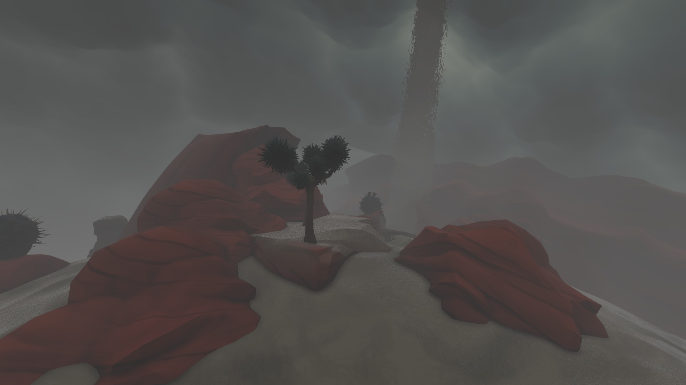
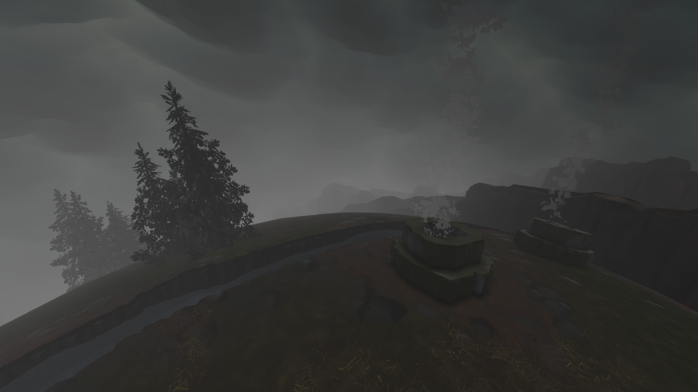
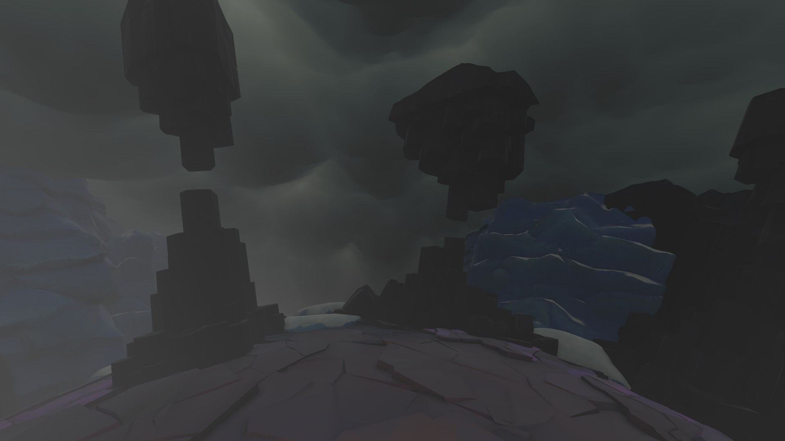
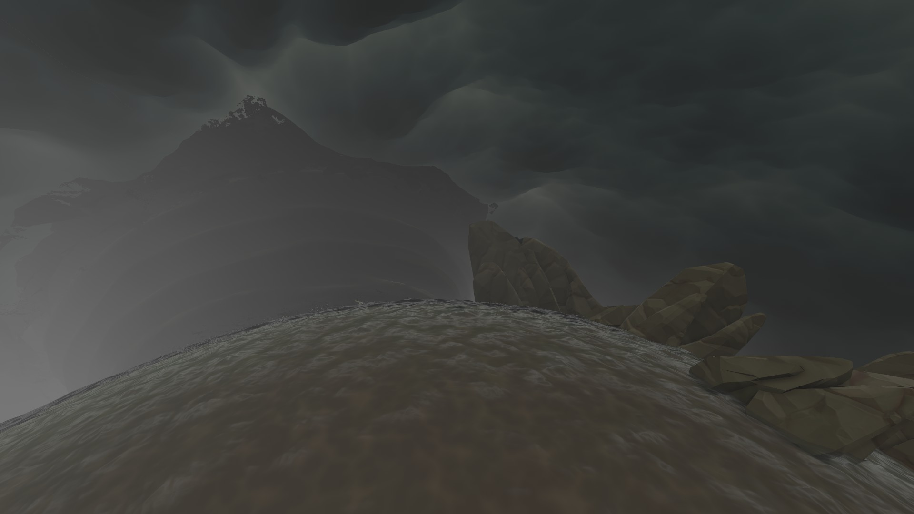
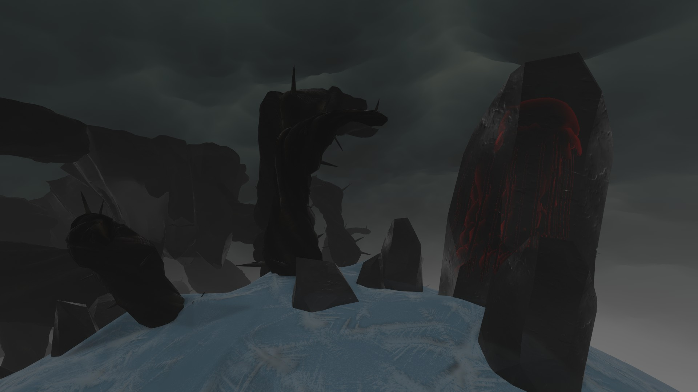
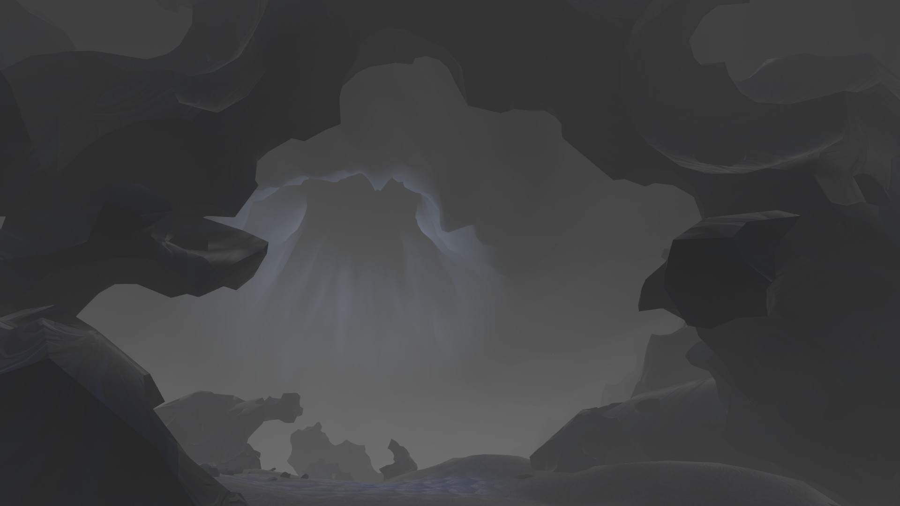
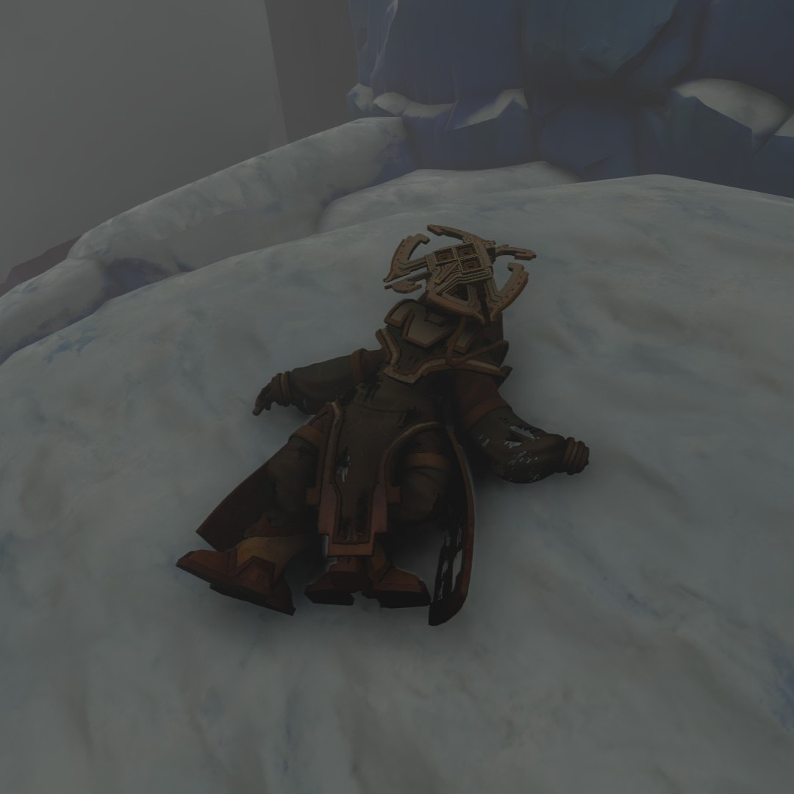
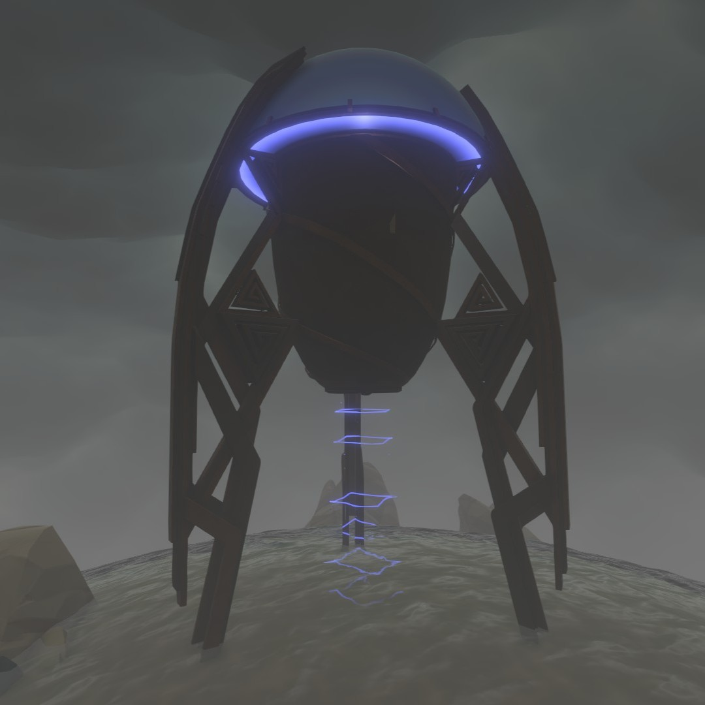
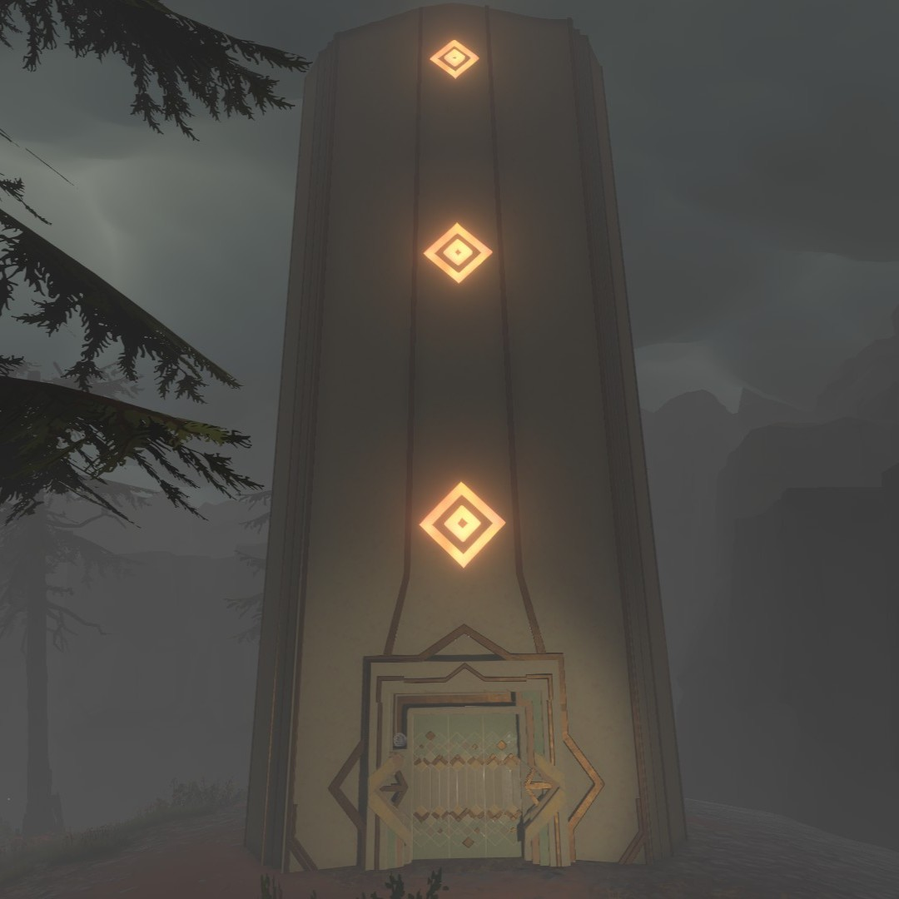
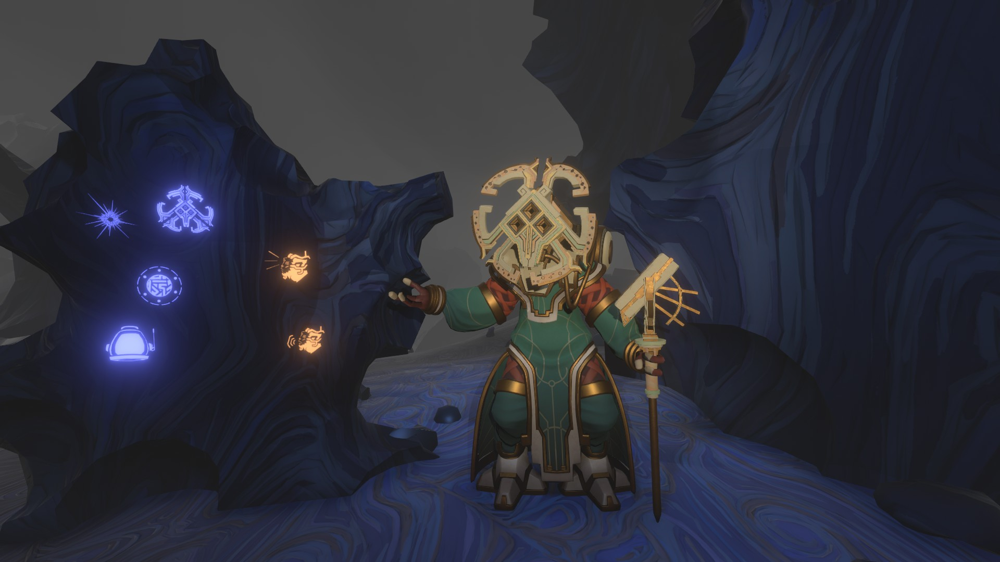

Successfully landing on the Quantum Moon will reveal that its surface reflects the planet that it is orbiting. The Quantum Moon's surface has six different variants depending on what it's orbiting, with the sixth location reflecting the location the Quantum Moon originates from.






PLACES OF INTEREST
Solanum's Corpse

A corpse belonging to the Nomai Solanum can be found in each variant of the Quantum Moon. While Solanum's corpse does not change locations like everything else on the moon, it will change poses if unobserved.
Solanum's Shuttle

A Nomai shuttle belonging to Solanum can be found in each variant of the Quantum Moon. Like everything else around it, it will move when unobserved. Inside the shuttle is a Nomai log written by Solanum, where she expresses her excitement about standing on the Quantum Moon for the first time. She mentions that, as expected, her shuttle landed on the Quantum Moon's south pole, though she still does not know why. She explains that as a child, she considered such unknowns sinister, but now she knows that they bear no ill will, stating, "The universe is, and we are."

Quantum Shrine
The Quantum Shrine is a Nomai structure found on each variant of the Quantum Moon that moves when unobserved. Inside the shrine is a control for the lights, a miniature version of the Quantum Moon Locator on the right wall, and three pictures depicting the three rules of the Quantum Moon on the left wall. The Quantum Shrine was used by Nomai to get to the sixth location, which is only accessible by being on the moon's north pole.
Solanum at the Sixth Location

When successfully traveling to the Quantum Moon's sixth location, a living version of Solanum can be found at the south pole standing under a large vortex in the moon's foggy atmosphere. Attempting to talk to Solanum verbally prompts her to create a few symbolic language stones, which will allow the player to have a rudimentary conversation with her about the Eye of the Universe, the Quantum Moon, and about each other. To ask her a question, the player will place two language stones into small stone pillars that she creates. To respond, she will print a message on the wall next to her with the staff she is holding that the player can translate. Talking to Solanum reveals that the Quantum Moon is the Eye of Universe's moon, and that the sixth location is the moon's reflection of the Eye.